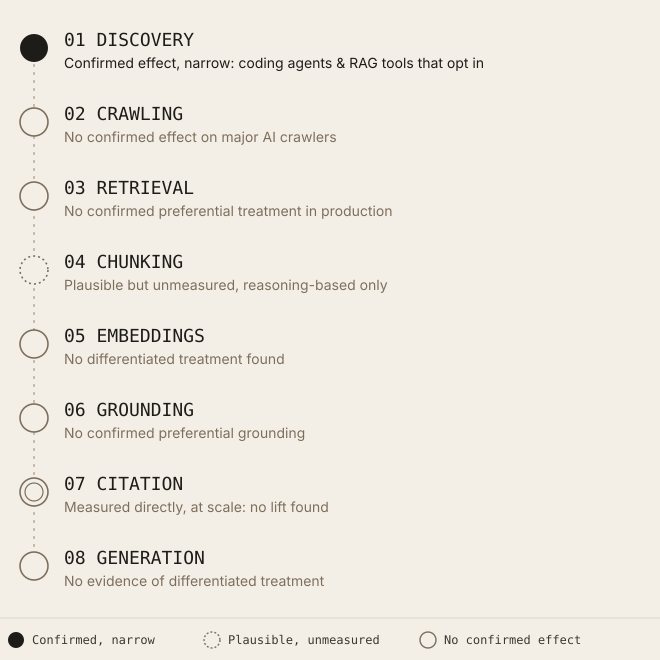
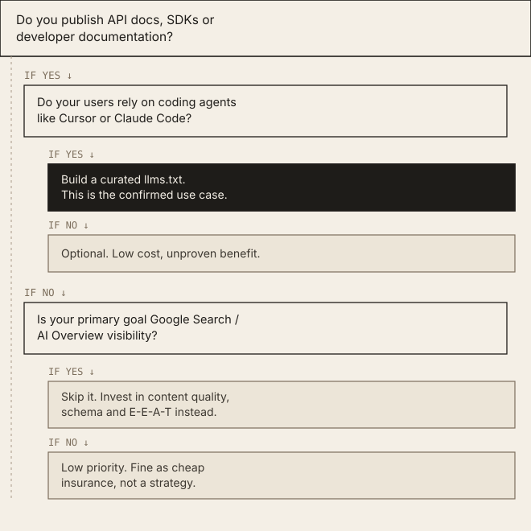

What llms.txt Actually Changes for AI Crawlers
llms.txt has no confirmed effect on crawling, retrieval, or AI citation today, outside one narrow and real use case: coding agents and RAG tooling that are built to fetch it on purpose.
Executive Summary
llms.txt is a proposed Markdown file, placed at a site's root, that gives AI systems a curated map of a website's most important pages. Jeremy Howard of Answer.AI published the proposal on September 3, 2024. As of mid-2026, no major AI vendor, not Google, not OpenAI, not Anthropic, not Perplexity, not Meta, has committed to using it as a retrieval, ranking, or citation input in production. Google has said so explicitly and repeatedly. OpenAI's crawler documentation never mentions it. Anthropic publishes one for its own docs but has made no claim that Claude reads other sites' files. Independent studies covering hundreds of thousands of domains and tens of thousands of AI citations find no measurable citation benefit, and adoption sits at roughly one in ten sites. The one place llms.txt demonstrably works is narrow and specific: developer-tool and API documentation, consumed intentionally by coding agents and RAG pipelines that are built to fetch it. Everywhere else, it is a low-cost bet with no confirmed payoff.
Introduction
The debate around llms.txt keeps resurfacing for a structural reason: it looks exactly like something that should matter. It sits in the same URL pattern as robots.txt and sitemap.xml, two files every technical SEO already treats as load-bearing. It was proposed by a credible figure, Jeremy Howard co-founded fast.ai and Answer.AI, and it solves a real, well-articulated problem. That combination makes it easy to assume adoption implies function.
The confusion has a second source: Google's own guidance is not internally consistent on the surface. Google Search says the file is unnecessary for AI Overviews and AI Mode. Google's Chrome team added an llms.txt check to Lighthouse's agentic-browsing audits in the same year. Both statements are true, and they answer different questions. This article separates the two, and everything else that gets blurred together in the current discourse: discovery from ranking, adoption from function, crawler visits from citation influence, and the documented behavior of AI systems from marketing claims about that behavior.
What Is llms.txt?
llms.txt is a Markdown file published at /llms.txt on a website's root domain. Jeremy Howard proposed it through Answer.AI on September 3, 2024, framing the problem plainly: language models increasingly draw on website content, but their context windows can't hold most sites in full, and converting HTML pages, with their navigation chrome, ads, and JavaScript, into something a model can use cleanly is both difficult and imprecise. The proposal's stated fix is a single, curated, plain-Markdown entry point that gives a model the same kind of concise overview a human expert would want, rather than forcing it to reconstruct that overview from raw HTML.
The specification lives at llmstxt.org, with the reference implementation and discussion hosted in the AnswerDotAI/llms-txt GitHub repository. It is a community proposal, not a ratified standard: no IETF RFC and no W3C working group has adopted it.
Relationship to robots.txt: robots.txt is an access-control file. It tells crawlers what they may and may not fetch, using Allow and Disallow directives per user-agent. llms.txt does nothing of the kind, it has no permission semantics. A site can have a fully permissive robots.txt and no llms.txt, or a restrictive robots.txt and a detailed llms.txt; the two files don't interact.
Relationship to sitemap.xml: sitemap.xml is exhaustive and machine-oriented, every indexable URL, with metadata for crawl scheduling. llms.txt is deliberately partial and human-curated, a short list of the pages the site owner considers most important, each with a one-line description, written in Markdown rather than XML.
Syntax
Only one element is required: an H1 with the site or project name. Everything else is optional but recommended.
# FastHTML
> FastHTML is a python library which brings together Starlette,
> Uvicorn, HTMX, and fastcore's `FT` "FastTags" into a library
> for creating server-rendered hypermedia applications.
Some optional context about the project goes here.
## Docs
- [Quickstart](https://example.com/quickstart.md): Get started in five minutes
- [API Reference](https://example.com/api.md): Full API documentation
## Optional
- [Changelog](https://example.com/changelog.md): Release historyThe proposal also defines an optional companion, /llms-full.txt, which concatenates the full Markdown content of the linked pages into a single file. Answer.AI built a command-line tool, llms_txt2ctx, that assembles either file, with or without the linked URLs resolved, into a ready-to-paste context block for use with models like Claude.
Why Was llms.txt Created?
Howard's proposal identifies three concrete problems:
- Context-window mismatch. Most websites, rendered as raw text, exceed what a model can hold alongside a user's actual question.
- HTML noise. Navigation bars, ad slots, cookie banners, and client-side JavaScript make automated extraction imprecise: a scraper either strips too much, losing content, or too little, polluting the context with boilerplate.
- No token-efficient format. Sitemaps enumerate URLs but carry no summary; full-page scraping carries summary but wastes tokens on markup and layout.
Markdown is the proposed fix because it's already the native format most LLMs are trained to read cleanly, and because a curated H2-linked structure lets a downstream tool decide how deep to go: read just the summary, or resolve every linked page.
Does Google Use llms.txt?
No, and Google has said so on the record more than once, through more than one channel.
At the Google Search Central Deep Dive event in the Asia-Pacific region on July 23, 2025, Gary Illyes stated plainly that Google does not support llms.txt and has no plans to. John Mueller reinforced this on Reddit, comparing the file to the meta keywords tag, a self-declared field Google stopped using for ranking decades ago specifically because site owners could write anything into it, with no verification. Mueller noted server logs show AI services generally aren't even requesting the file.
Google's own AI-features documentation, updated June 15, 2026 specifically to address recurring community questions, states directly that publishers don't need to create special AI files, markup, or Markdown to appear in Google Search or its generative features, because Search doesn't use them.
Confusion event: On December 3, 2025, an llms.txt briefly appeared on one of Google's own developer-docs properties (ai.google.dev). It disappeared the same day. When asked on Bluesky whether this counted as an endorsement, Mueller's answer was one word: "no." The file existed because Google's internal documentation CMS had added generic llms.txt support, not because Search Relations had changed position.
What Google has not confirmed: any use of llms.txt in ranking, retrieval, or AI Overview/AI Mode source selection. Zero.
Lighthouse is a separate story. Chrome shipped an llms.txt check inside Lighthouse's experimental Agentic Browsing category, documented as of May 5, 2026. The audit only checks that the file, if present, is reachable, a server error is flagged, while a 404 is marked Not Applicable, since Google's own documentation calls providing the file optional. Chrome's rationale is narrow and consistent with the Search team's position: an AI agent browsing a page live may waste time reconstructing site structure without a summary file, which is a browser-automation efficiency question, not a search-ranking one. The two teams are answering different questions with tools built for different jobs, which is why the guidance reads as contradictory if you don't separate them.
Google's more concrete bet for agent-website interaction is WebMCP, a separate W3C proposal (Web Machine Learning Community Group) that lets a page expose typed, callable JavaScript tools to an in-browser agent, rather than a static content summary. It moved into a public Chrome 149 origin trial on May 19, 2026, at Google I/O. Mueller has pointed to WebMCP, not llms.txt, as the direction he considers more promising for agent interaction.
Does OpenAI Use llms.txt?
Fact: OpenAI's official crawler documentation covers GPTBot, OAI-SearchBot, ChatGPT-User, and OAI-AdsBot, and describes controlling all of them through robots.txt directives. The word "llms.txt" does not appear anywhere in that documentation.
Fact: OpenAI publishes its own llms.txt for its developer docs, but that's the same documentation-export pattern every doc-platform vendor uses, not evidence that GPTBot reads anyone else's file.
Disputed/anecdotal: Individual site owners have posted server-log screenshots showing OpenAI-associated user agents requesting /llms.txt at regular intervals. These reports exist, and Google's own Gary Illyes has acknowledged seeing similar activity from OpenAI while reiterating Google isn't doing the same. A fetch is not proof of use, however, it confirms a bot found the file reachable, not that the file's content shaped an output.
Independent measurement: A 30-day log analysis across 1,000 Adobe Experience Manager domains found zero requests to /llms.txt from GPTBot, ClaudeBot, or PerplexityBot; the handful of AI-adjacent hits came from OAI-SearchBot on a single domain. A separate 90-day, 62,100-visit study found only 84 requests, 0.1% of all AI bot traffic, targeted /llms.txt directly.
There is currently no public evidence that OpenAI's production crawlers treat llms.txt as a preferential input for training, retrieval, or ChatGPT's live browsing.
Does Anthropic Use It?
Anthropic created the Model Context Protocol (November 25, 2024), a different, more consequential standard that is frequently and incorrectly conflated with llms.txt in casual discussion. MCP defines how an AI application connects to external tools and data sources at runtime; llms.txt is a static content-summary file. They solve unrelated problems.
Anthropic publishes both /llms.txt and /llms-full.txt for its own developer documentation (docs.claude.com), following the same documentation-export pattern OpenAI and other developer-tool companies use. Mintlify, the docs platform, has stated that Anthropic asked it to implement llms.txt and llms-full.txt support for Anthropic's own docs, that claim comes from Mintlify, a vendor with a commercial interest in the format's adoption, and should be read as a platform's account of a customer request, not an Anthropic policy statement.
There is currently no public evidence that ClaudeBot, or any Claude product, gives /llms.txt special retrieval priority when reading third-party websites.
Current Industry Adoption
Adoption figures diverge sharply depending on methodology and dataset, and the sources disagree with each other:
| Source | Dataset | Reported Adoption |
|---|---|---|
| SE Ranking (Nov 2025) | ~300,000 domains | 10.13% |
| Generix Marketing (Apr 2026) | 2,500 sites | 6.5% |
| ProGEO.ai | Fortune 500 | 7.4% |
| HTTP Archive / Web Almanac 2025 | Full crawl | ~0.015% early 2025, rising to ~2% by end of 2025 |
| Okara (May 2026) | Tranco Top 10,000 | 5.86% |
The spread reflects different sampling frames, Fortune 500 vs. long-tail domains vs. Tranco top sites, and different validation strictness, some studies reject files that resolve to soft-404 or generic HTML error pages. Treat any single adoption number as approximate.
Who's adopted it: SaaS, developer-tool, and API-documentation companies lead, Stripe, Cursor, Mintlify, Zapier, Slack, Notion, Vercel, and FastHTML appear repeatedly across vendor case studies as early adopters.
Who hasn't: the highest-authority, most-cited domains. A study of 37,894 domains with confirmed AI citation history found that reference, review, and academic sites, the categories with the highest domain authority, had the lowest llms.txt adoption. Reddit, Reuters, Forbes, and LinkedIn dominate AI citations with no llms.txt file at all.
Who's recommending it: SEO tool vendors (Yoast, Rank Math now ship one-click generators), GEO agencies positioning it as a checklist item, and Chrome's Lighthouse team, in the narrow agent-browsing-efficiency sense described above.
What Actually Changes?
Breaking the pipeline into discrete stages, from a model's first contact with a site to the words it generates, the dotted annotations below matter as much as the connecting spine: llms.txt only has a confirmed entry point at the discovery stage, and only for tools built to look for it. Everywhere downstream, evidence is either absent or contradicts an effect. Discovery itself is a separate question from whether a crawler ever reaches a page at all, a distinction covered in more depth in the site's research on crawl budget and retrieval readiness, and chunking is the stage where how AI systems actually process a page once fetched becomes the more decisive factor.

Confirmed effect stops at discovery, and only for tools built to look for the file.| Stage | Does llms.txt Affect It? | Evidence | Confidence |
|---|---|---|---|
| Discovery | Only if something deliberately requests the file | Log studies show 0.1%–7 requests per 1,000 visits from major AI bots | High confidence of no effect for consumer chat crawlers; moderate confidence of real effect for coding agents/RAG tools built to fetch it |
| Crawling | No measured effect on GPTBot, ClaudeBot, PerplexityBot, Google-Extended | Multi-domain log analyses find near-zero requests | High confidence of no effect |
| Retrieval (RAG grounding in chat products) | No confirmed preferential treatment in production | No vendor has published a retrieval-priority claim | High confidence of no effect |
| Chunking | Plausible, unmeasured benefit if a system deliberately ingests llms-full.txt | Markdown parses more cleanly than HTML with nav/ads/scripts, Howard's stated design rationale | Reasoning-based, not empirically measured |
| Embeddings | No special treatment found | Ingested content, if any, is embedded like any other text | High confidence of no differentiated effect |
| Grounding | No confirmed preferential grounding on llms.txt-declared pages | No vendor statement; independent citation-tracing studies contradict it | High confidence of no effect |
| Citation | Measured directly, repeatedly, at scale, no lift found | SE Ranking (300k domains): no statistically significant correlation. ALLMO.ai: 1 of 94,614 traced citations came from an llms.txt-linked page. Trakkr: no citation advantage across 37,894 domains | High confidence of no measurable effect today |
| Generation | No evidence of differentiated treatment | Downstream of retrieval/grounding, which show no effect | High confidence of no effect |
The pattern across every stage that's actually been measured, discovery by major bots, crawling frequency, and citation frequency, is the same: no detectable effect. The one stage where a plausible mechanism exists, chunking benefiting from clean Markdown, has never been isolated and tested; it's a reasonable hypothesis, not a finding.
Myths vs. Facts
| Claim | Status | Why |
|---|---|---|
| llms.txt improves Google rankings | Myth | Google's Search Relations team has said this directly, more than once, in writing and on stage |
| llms.txt replaces robots.txt | Myth | Different function entirely, no access-control semantics |
| Every LLM reads llms.txt | Myth | No major consumer LLM crawler shows meaningful request volume for it |
| Having llms.txt increases AI citations | Myth | Three independent studies (SE Ranking, ALLMO.ai, Trakkr), different methodologies, same null result |
| Google's Lighthouse audit means Google uses it for Search | Myth | Lighthouse audits agent-browsing efficiency, a Chrome product decision, separate from Search ranking |
| Coding agents and RAG pipelines can be built to use it | Fact | This is llms.txt's actual designed use case, and tooling exists for it (llms_txt2ctx) |
| Some AI bots occasionally fetch it | Fact, but low-volume | Confirmed in logs, at request rates near 0.1% of AI bot traffic |
| WebMCP will eventually matter more for agent interaction | Unproven, but Google is betting on it | Live origin trial, industry co-authorship (Microsoft), zero adoption so far |
Timeline
| Date | Event |
|---|---|
| September 3, 2024 | Jeremy Howard (Answer.AI) publishes the llms.txt proposal |
| Late 2024 to 2025 | Early adoption by dev-tool and SaaS companies (Stripe, Mintlify, Zapier, Cursor) |
| July 23, 2025 | Gary Illyes states at Search Central Live (APAC) that Google does not support llms.txt |
| November 7, 2025 | SE Ranking publishes 300,000-domain study: no citation correlation |
| December 3, 2025 | llms.txt briefly appears on a Google developer-docs property, then is removed same day |
| January 23, 2026 | ALLMO.ai study: 1 of 94,614 traced AI citations came via llms.txt |
| February 10, 2026 | WebMCP first announced (Google, Microsoft, W3C Web ML CG) |
| May 5, 2026 | Chrome documents the Lighthouse llms.txt audit (Agentic Browsing category) |
| May 19, 2026 | WebMCP enters public origin trial in Chrome 149 at Google I/O |
| June 15, 2026 | Google updates AI-features guidance, explicitly naming llms.txt as unnecessary |
Decision Tree: Should You Build One?

The only branch with a confirmed payoff runs through developer documentation and coding agents.Practical Benefits
Who should create one:
- Developer-tool, API, and SDK companies whose users route through coding assistants (Cursor, Claude Code, GitHub Copilot) that are explicitly built to ingest doc-summary files at inference time
- Documentation platforms already generating Markdown as a build artifact, where an llms.txt costs nothing incremental to produce
- Teams that want a Lighthouse Agentic Browsing score with no missing checks, since the audit only penalizes broken files, not absent ones
Who probably doesn't need it:
- E-commerce, local business, publisher, and content-marketing sites chasing Google AI Overviews or AI Mode visibility, Google has explicitly ruled this out as a lever
- Any site expecting a citation-frequency improvement in ChatGPT, Claude, Gemini, or Perplexity answers, no study has found one
- Sites without existing Markdown or clean content-export tooling, where building the file is nontrivial engineering for an unproven return
Best Practices
Checklist:
- Required H1 with site/project name
- Blockquote with a one to three sentence summary
- H2-organized link sections, each entry with a short description
- Links point to Markdown or plain-text versions of pages where possible, not JS-rendered HTML
- File served with a 200 status and correct text/markdown or text/plain content type
- Consider noindex on the file itself so it doesn't get indexed as a regular search result, Mueller's suggestion
- If publishing llms-full.txt, keep it a genuine concatenation of real page content, not a marketing rewrite
- Re-validate periodically, broken or stale files are the one thing Lighthouse's audit actually flags
Common mistakes:
- Treating it as an SEO ranking lever and prioritizing it over content quality, schema, or E-E-A-T signals that have measured impact
- Auto-generating it from a sitemap with no real curation, defeating the entire curated premise
- Letting it 404 or 500 silently, this is the one condition Lighthouse actively flags
- Linking to HTML pages instead of Markdown/plain-text equivalents, reintroducing the noise problem the format was built to solve
Future Outlook
For llms.txt to become a genuine web standard, it would need at least one of the following, none of which has happened as of mid-2026: formal adoption into an IETF or W3C standards track; a public commitment from at least one major model provider to use it as a production retrieval or ranking input; or measurable, reproducible citation lift in independent studies, replacing the current null results.
The more concrete signal to watch is WebMCP, which answers a related but different question, not "what should an agent read to understand my site" but "what should an agent be able to do on my site." It has Google and Microsoft co-authorship, a live Chrome 149 origin trial, and named launch partners, which is a materially stronger adoption signal at this stage than llms.txt has ever had. Whether WebMCP eventually absorbs the site-summary use case llms.txt was built for, or the two coexist, is unresolved.
Key Takeaways
- Jeremy Howard (Answer.AI) proposed llms.txt on September 3, 2024; it is not a ratified standard.
- Google's Search Relations team has stated on the record, multiple times, that Search does not use it and has no plans to.
- Chrome's Lighthouse tool audits llms.txt for reachability under a separate agent-browsing-efficiency rationale, this is not a Search signal.
- OpenAI's official crawler documentation never mentions llms.txt; robots.txt remains the documented control mechanism.
- Anthropic publishes an llms.txt for its own docs but has made no claim that Claude prioritizes reading other sites' files.
- Independent studies spanning hundreds of thousands of domains and tens of thousands of citations find no measurable correlation with AI citation frequency.
- Adoption sits roughly in the 2% to 10% range depending on dataset, concentrated in SaaS and developer-tool sites.
- The highest-authority, most AI-cited domains (Reddit, Reuters, Forbes) largely don't have one.
- The one confirmed, designed use case is coding agents and RAG tooling that intentionally fetch it, a narrow, real, and different claim than AI visibility.
- WebMCP, a separate and unrelated standard, currently has a stronger adoption trajectory for agent-website interaction than llms.txt does for content summarization.
Glossary
- llms.txt
- A Markdown file at a site's root summarizing its most important content for LLM consumption.
- llms-full.txt
- Optional companion file containing the full Markdown content of the pages llms.txt links to.
- robots.txt
- Access-control file specifying which crawlers may fetch which URLs.
- GEO (Generative Engine Optimization)
- Practices aimed at improving a site's likelihood of being cited or surfaced by generative AI answer engines.
- RAG (Retrieval-Augmented Generation)
- Architecture where a model retrieves external documents at query time to ground its answer.
- WebMCP
- A proposed W3C standard letting a website expose callable JavaScript tools to in-browser AI agents.
- MCP (Model Context Protocol)
- Anthropic's open standard for connecting AI applications to external tools and data sources; unrelated to llms.txt despite similar naming.
FAQ
Does adding llms.txt hurt my SEO?
No evidence suggests it does. It also shows no evidence of helping.
Should I remove my llms.txt file?
Not necessarily, it's low-cost to maintain and has a real, if narrow, use for coding agents. But it shouldn't be treated as a growth lever.
Is llms.txt the same as MCP?
No. MCP is Anthropic's protocol for connecting AI applications to tools and data at runtime. llms.txt is a static file. The naming similarity causes frequent confusion.
Will Google ever support it?
Google's public position, as of June 2026, is explicit non-support with no stated plans to change that.
References
- Answer.AI, "/llms.txt, a proposal to provide information to help LLMs use websites," September 3, 2024, answer.ai/posts/2024-09-03-llmstxt.html
- llmstxt.org, the published specification
- AnswerDotAI/llms-txt, GitHub repository, reference implementation
- Google Search Central, AI features guidance (mythbusting section), updated June 15, 2026
- Chrome for Developers, "llms.txt | Lighthouse," developer.chrome.com/docs/lighthouse/agentic-browsing/llms-txt
- Chrome for Developers, "Join the WebMCP origin trial," June 9, 2026
- OpenAI, "Overview of OpenAI Crawlers," developers.openai.com/api/docs/bots
- SE Ranking, "LLMs.txt: Why Brands Rely On It and Why It Doesn't Work," November 7, 2025
- ALLMO.ai, "LLMs.txt for AI Search Report 2026," January 23, 2026
- Trakkr Research, "The llms.txt Effect: 37,894 Domains Scanned, Zero Citation Advantage," March 19, 2026
- Search Engine Journal / Search Engine Land coverage of Google Search Central Live statements (Gary Illyes, John Mueller), July to August 2025
- Search Engine Roundtable, coverage of John Mueller's Bluesky statements on llms.txt, December 2025 to January 2026